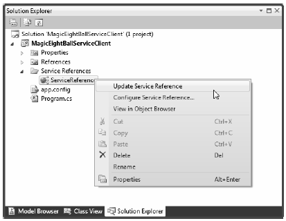

As you were working through the first example of the chapter, you might have noticed that the hosting configuration logic is quite verbose. For example, your host’s *.config file (for the original basic HTTP binding) needed to define an <endpoint> element for the service, a second <endpoint> element for MEX, a <baseAddresses> element (technically optional) to reduce redundant URIs, and then a <behaviors> section to define the runtime nature of metadata exchange.
To be sure, learning how to author hosting *.config files can be a major hurdle when building WCF services. To make matters more frustrating, a good number of WCF services tend to require the same basic settings in a host configuration file. For example, if you were to make a brand new WCF service and a brand new host, and you wanted to expose this service using <basicHttpBinding> with MEX support, the required *.config file would look almost identical to the one you previously authored.
Thankfully, under .NET 4.0, the Windows Communication Foundation API ships with a number of simplifications, including default settings (and other shortcuts) that make the process of building host configuration files much easier.
Under .NET 3.5, if you call Open() on the ServiceHost object, and you have not yet specified at least one <endpoint> element in your configuration file, the runtime will thrown an exception. And you get a similar result if you call AddServiceEndpoint() in code to specify an endpoint. However, with the release of .NET 4.0, every WCF service is automatically provided with default endpoints that capture commonplace configuration details for each supported protocol.
If you were to open the machine.config file for .NET 4.0, you would find a new element named <protocolMapping>. This element documents which WCF bindings to use by default, if you do not specify any:
<system.serviceModel> ... <protocolMapping> <add scheme="http" binding="basicHttpBinding"/> <add scheme="net.tcp" binding="netTcpBinding"/> <add scheme="net.pipe" binding="netNamedPipeBinding"/> <add scheme="net.msmq" binding="netMsmqBinding"/> </protocolMapping> ... </system.serviceModel>
To use these default bindings, all you need to do is specify base addresses in your host configuration file. To see this in action, open the HTTP-based MagicEightBallServiceHost project in Visual Studio. Now update your hosting *.config file by completely removing the <endpoint> element for your WCF service and all MEX-specific data. Your configuration file should now look like this:
<configuration> <system.serviceModel> <services> <service name="MagicEightBallServiceLib.MagicEightBallService" > <host> <baseAddresses> <add baseAddress="http://localhost:8080/MagicEightBallService"/> </baseAddresses> </host> </service> </services> </system.serviceModel> </configuration>
Because you specified a valid HTTP <baseAddress>, your host will automatically use basicHttpBinding. If you run your host again, you will see the same listing of ABC data:
***** Console Based WCF Host ***** ***** Host Info ***** Address: http://localhost:8080/MagicEightBallService Binding: BasicHttpBinding Contract: IEightBall ********************** The service is ready. Press the Enter key to terminate service.
You have not yet enabled MEX, but you will do so in a moment using another .NET 4.0 simplification known as default behavior configurations. First, however, you will learn how to expose a single WCF service using multiple bindings.
Since its first release, WCF has had the ability to allow a single host to expose a WCF service using multiple endpoints. For example, you could expose the MagicEightBallService using HTTP, TCP, and named pipe bindings simply by adding new endpoints to your configuration file. Once you restart the host, all of the necessary plumbing is created automatically.
This is a huge benefit for many reasons. Before WCF, it was difficult to expose a single service using multiple bindings because each type of binding (e.g., HTTP and TCP) had its own programming model. Nevertheless, the ability to allow a caller to pick the most appropriate binding is extremely useful. In-house callers might like to use TCP bindings that an outwardly facing client (outside of your company firewall) would need to use HTTP to access, while clients on the same machine might wish to use a named pipe.
To do this before .NET 4.0, your hosting configuration file would need to define multiple <endpoint> elements manually. It would also have to define multiple <baseAddress> elements for each protocol. However, today you can simply author the following configuration file:
<configuration> <system.serviceModel> <services> <service name="MagicEightBallServiceLib.MagicEightBallService" > <host> <baseAddresses> <add baseAddress="http://localhost:8080/MagicEightBallService"/> <add baseAddress= "net.tcp://localhost:8099/MagicEightBallService"/> </baseAddresses> </host> </service> </services> </system.serviceModel> </configuration>
If you compile your project (to refresh the deployed *.config file) and restart the host, you would now see the following endpoint data:
***** Console Based WCF Host ***** ***** Host Info ***** Address: http://localhost:8080/MagicEightBallService Binding: BasicHttpBinding Contract: IEightBall This book was purchased by max.sage@webitec.co.uk Address: net.tcp://localhost:8099/MagicEightBallService Binding: NetTcpBinding Contract: IEightBall ********************** The service is ready. Press the Enter key to terminate service.
Now that your WCF service can be reachable from two unique endpoints, you might wonder how the caller is able to select between them. When you generate a client-side proxy, the Add Service reference tool will give each exposed endpoint a string name in the client side *.config file. In code, you can pass in the correct string name to the proxy’s constructor, and sure enough, the correct binding will be used. Before you can do this, however, you need to reestablish MEX for this modified hosting configuration file and learn how to tweak the settings of a default binding.
If you specify the ABCs of a service in C# code (which you will do later in this chapter), it becomes obvious how you change the default settings of a WCF binding; you simply change the property values of the object! For example, if you want to use BasicHttpBinding, but also want to change the timeout settings, you could do so as follows:
void ConfigureBindingInCode() { BasicHttpBinding binding = new BasicHttpBinding(); binding.OpenTimeout = TimeSpan.FromSeconds(30); ... }
It has always been possible to configure settings for a binding in a declarative manner. For example,.NET 3.5 let you build a host configuration file that changes the OpenTimeout property of BasicHttpBinding:
<configuration> <system.serviceModel> <bindings> <basicHttpBinding> <binding name = "myCustomHttpBinding" openTimeout = "00:00:30" /> </basicHttpBinding> </bindings> <services> <service name = "WcfMathService.MyCalc"> <endpoint address = "http://localhost:8080/MyCalc" binding = "basicHttpBinding" bindingConfiguration = "myCustomHttpBinding" contract = "WcfMathService.IBasicMath" /> </service> </services> </system.serviceModel> </configuration>
Here, you have a configuration file for a service named WcfMathService.MyCalc, which supports a single interface named IBasicMath. Note how the <bindings> section allows you to define a named <binding> element, which tweaks settings for a given binding. Within the <endpoint> of the service, you can connect your specific settings using the bindingConfiguration attribute.
This sort of hosting configuration still works as expected under .NET 4.0; however if you leverage a default endpoint, you can’t connect the <binding> to the <endpoint>! As luck would have it, you can control the settings of a default endpoint simply by omitting the name attribute of the <binding> element. For example, this snippet changes some properties of the default BasicHttpBinding and NetTcpBinding objects used in the background:
<configuration> <system.serviceModel> <services> <service name="MagicEightBallServiceLib.MagicEightBallService" > <host> <baseAddresses> <add baseAddress="http://localhost:8080/MagicEightBallService"/> <add baseAddress= "net.tcp://localhost:8099/MagicEightBallService"/> </baseAddresses> </host> </service> </services> <bindings> <basicHttpBinding> <binding openTimeout = "00:00:30" /> </basicHttpBinding> <netTcpBinding> <binding closeTimeout="00:00:15"/> </netTcpBinding> </bindings> </system.serviceModel> </configuration>
A proxy generation tool must discover the composition of a service at runtime before it can do its work. In WCF, you allow this runtime discovery to occur by enabling MEX. Again, most host configuration files need to enable MEX (at least during development); fortunately, the way you configure MEX seldom changes, so .NET 4.0 provides a few handy shortcuts.
The most useful shortcut is out-of-the-box MEX support. You don’t need to add a MEX endpoint, define a named MEX service behavior, and then connect the named binding to the service (as you did in the HTTP version of the MagicEightBallServiceHost); instead, you can now simply add the following:
<configuration> <system.serviceModel> <services> <service name="MagicEightBallServiceLib.MagicEightBallService" > <host> <baseAddresses> <add baseAddress="http://localhost:8080/MagicEightBallService"/> <add baseAddress= "net.tcp://localhost:8099/MagicEightBallService"/> </baseAddresses> </host> </service> </services> <bindings> <basicHttpBinding> <binding openTimeout = "00:00:30" /> </basicHttpBinding> <netTcpBinding> <binding closeTimeout="00:00:15"/> </netTcpBinding> </bindings> <behaviors> <serviceBehaviors> <behavior> <!-- To get default MEX, don't name your <serviceMetadata> element--> <serviceMetadata httpGetEnabled="true"/> </behavior> </serviceBehaviors> </behaviors> </system.serviceModel> </configuration>
The trick is that the <serviceMetadata> element no longer has a name attribute (also notice the <service> element no longer needs the behaviorConfiguration attribute). With this adjustment, you get free MEX support at runtime. To test this, you can run your host (after you compile to refresh the configuration file) and type in the following URL in a browser:
http://localhost:8080/MagicEightBallService
Once you do this, you can click the wsdl link at the top of the web page to see the WSDL description of the service (see Figure 25-6 for a refresher). Note that you do not see the host’s console window print out data for the MEX endpoint because you have not explicitly defined an endpoint for IMetadataExchange in your configuration file. Nevertheless, MEX is enabled, and you can start to build client proxies.
Assuming your updated host has been compiled and is running in the background, you will now want to open the client application and refresh the current service reference. Begin by opening the Service References folder found in the Solution Explorer. Next, right-click the current ServiceReference and pick the Update Service Reference menu option (see Figure 25-8).
Figure 25-8 Refreshing the proxy and client side *.config file
Once you done this, you will see that the client side *.config file has two bindings to select from: one for HTTP and one for TCP. As you can see, you give each binding a fitting name. Here is a partial listing of the refreshed configuration file:
<configuration> <system.serviceModel> <bindings> <basicHttpBinding> <binding name="BasicHttpBinding_IEightBall" ... /> </basicHttpBinding> <netTcpBinding> <binding name="NetTcpBinding_IEightBall" ... /> </netTcpBinding> </bindings> ... </system.serviceModel> </configuration>
The client can use these names when it creates the proxy object to select the binding it wishes to use. Thus, if your client would like to use TCP, you could update the client side C# code as follows:
static void Main(string[] args) { Console.WriteLine("***** Ask the Magic 8 Ball *****\n"); using (EightBallClient ball = new EightBallClient("NetTcpBinding_IEightBall")) { ... } Console.ReadLine(); }
If a client would rather use the HTTP binding, you could write:
using (EightBallClient ball = new EightBallClient("BasicHttpBinding_IEightBall")) { ... }
That wraps up the current example, which showcased a number of WCF 4.0’s useful features. These features simplify how you can author hosting configuration files. Next up, you will see how to use the WCF Service Library Project template.
Source Code You can find the MagicEightBallServiceHTTPDefaultBindings project located under the Chapter 25 subdirectory.